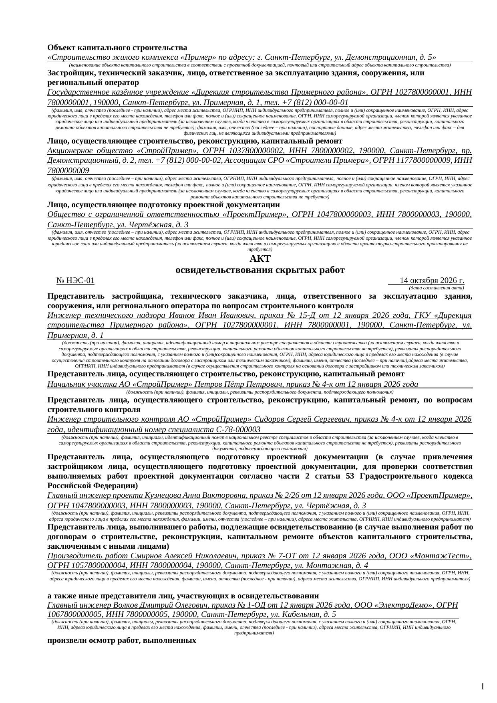
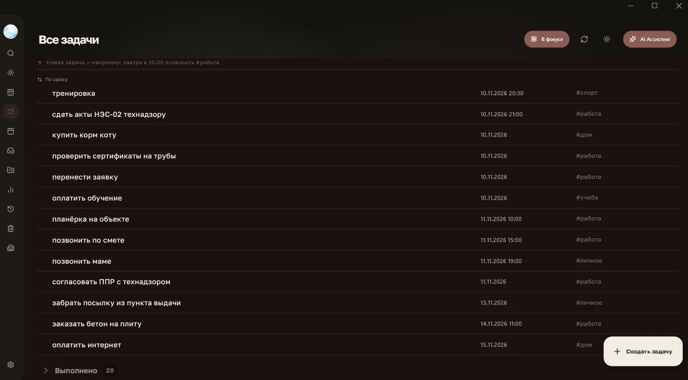

Программы для работы, которую обычно делают руками

Внёс объект один раз. Акты и журналы собираются сами.
Стороны, люди с приказами, материалы с сертификатами — в карточке объекта. Сменился начальник участка — меняете приказ в одном месте, а не в сорока актах.
Проверка до технадзора
Акт раньше окончания работ, представитель без действующего приказа, материал без сертификата — видно до подписи.
Замечания стройконтроля
Ведутся списком со сроками. Пока замечание по акту открыто, Actum напомнит, а в раздел 4 журнала оно попадёт само.
Том ИД одной кнопкой
Опись, сквозная нумерация и лист-заверитель. Акты пачкой в Word и PDF.
Вместе через общую папку
Сетевой диск или Яндекс Диск — и с объектом работают несколько человек. Видно, кто сейчас внутри, правки не затираются.
Без интернета
Данные лежат у вас на компьютере. Ни серверов, ни аккаунтов, ни подписки.
Обновляется сама
Из интернета или из общей папки, если на работе режут GitHub. Права администратора не нужны.
Скажите задачу так, как сказали бы человеку.
Без полей и календарей. Clarify сам находит в фразе дату, время и метку. Попробуйте прямо здесь.

Голосом
Нажали микрофон и продиктовали. Руки при этом могут быть заняты.
Из Telegram
Отправьте боту сообщение или голосовое — задача появится в приложении.
Компьютер и телефон
Отметили на одном — через секунду отмечено на другом. Без интернета изменения копятся и уходят, когда связь вернётся.
Три правила, по которым понятно, чего ждать
Доделываю до конца
Три функции, которые работают всегда, полезнее десяти, которые работают, если повезёт. На странице продукта нет ни слова о том, чего в нём ещё нет.
Неудобное говорю первым
Windows ругается на установщики без платной подписи. Об этом написано у кнопки скачивания, а не обнаруживается после неё.
Не беру денег, пока не за что
Обе программы бесплатны: без подписок, рекламы и оплаты внутри. Если появится платная часть, скажу заранее и прямо.